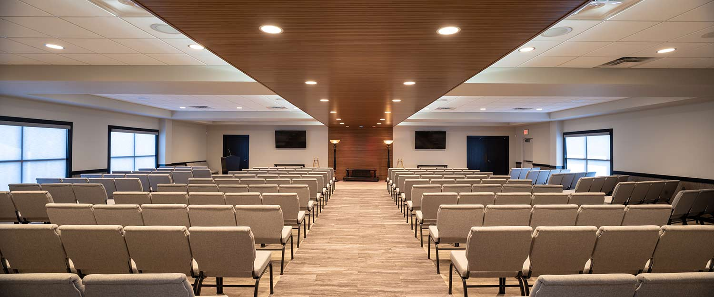

WELCOME to BLOGS !

A Passion For Building
The construction industry is full of incredibly talented people who truly love working with their hands. Construction workers have a passion for taking raw pieces of material and turning them into something beautiful. If you ask any person in construction, most of them would say that this is the reason they work in this industry. You can tell a lot about a person’s true passion by the way that they spend their free time. Jeff, Nolan, and Steve are a few people at Straub Construction who like to spend some of their free time woodworking. Starting with nothing but some nails, glue, and raw pieces of wood, these guys build some true works of art.

S2 Project Spotlight: Maple Hill Funeral Home Renovation
This renovation included revised layouts, new exterior windows and doors, new finishes, as well as a complete gut and remodel of existing restrooms. In addition, we also installed a new cremation machine in the building and all necessary electrical, structural, and roof modifications it required. The meeting rooms, offices, and chapels showcase new flooring, wall coverings, ceilings, lights, doors and trim. The main chapel also features an integrative lighting and wood panel system across the center of the room’s ceiling and down the center of the front of the room. The fully remodeled restrooms contain floor to ceiling tile, solid surface counters, and new ceilings.


WE ARE WORKING HARD ENOUGH THOURGH LAST WEEK FOR THIS WEBSITE WE PREFER EMAIL BUT FEEL FREE TO GIVE US A CALL